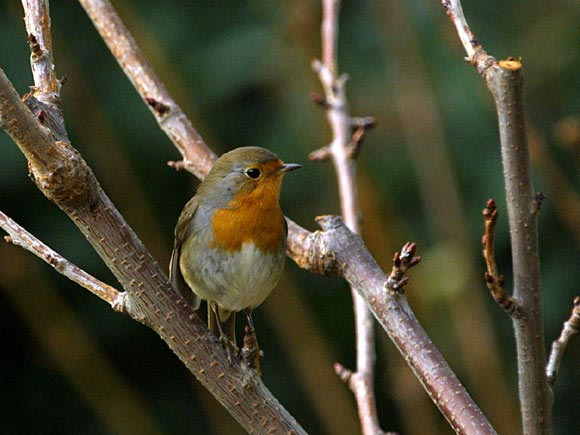

Le rouge gorge
Le mâle et la femelle sont presque identiques, avec une couronne, des ailes, le dessus et la queue de couleur brune, une bande grise sur les côtés de la gorge, un ventre blanc et la fameuse « gorge rouge », plus précisément de couleur
orange foncé. L'identification des jeunes peut se révéler difficile, car il leur manque la tache rouge et ils présentent un plumage brun tacheté.
Le rouge-gorge est légèrement plus petit qu'un moineau, il est rondelet et haut sur pattes, ses grands yeux noirs sont également caractéristiques.
Comportement
Sa nature peu farouche et son plumage attractif l'ont rendu populaire chez des générations de jardiniers; en réalité le rouge-gorge fait partie d'une espèce d'oiseau très agressive, et certains mâles se battent parfois à mort pour défendre
leur territoire. Présent dans presque chaque jardin, c'est l'un des oiseaux les moins sauvages, cherchant sa nourriture à proximité des humains en train de jardiner. Il ira jusqu'à venir se nourrir de proies vivantes, comme des vers
de terre ou des vers de farine, présentés à la main. Si l'hiver est rude, il deviendra encore plus familier, car le manque de nourriture provoqué par la neige et la glace le rend très vulnérable.
Le rouge-gorge défend un territoire à longueur d'année, sauf durant la mue et si l'hiver est très froid. En hiver, les femelles occupent et défendent aussi un territoire. Celui-ci leur est nécessaire non seulement pour nicher, mais aussi pour garantir
une source suffisante de nourriture. Un rouge-gorge sans territoire meurt au bout de quelques semaines. C'est pourquoi cet espace est défendu avec une telle énergie. En général, il suffit que le propriétaire exhibe son plastron rouge
pour que l'intrus recule, mais il peut arriver que la lutte s'engage et les combats s'achèvent parfois par la mort de l'un des adversaires.
À l'opposé de nombreux autres oiseaux, le rouge-gorge vit en solitaire pendant l'automne et l'hiver mâle et femelle restant sur leur territoire hivernal respectif avec comme résultat qu'ils continuent à chanter même en hiver.
Le rouge-gorge semble bien voir dans l'obscurité, car il est encore actif le soir quand il n'y a plus de lumière.
Habitat
C'est surtout en hiver que le rouge-gorge vient dans les jardins des villes et des villages. À la belle saison, il habite les bois et les forêts ou le bocage dans les haies, les boqueteaux et sous-bois denses. Dans certaines régions, les
rouges-gorges restent toute l'année près de l'homme. Ce petit oiseau passe la nuit sur un buisson touffu, un lierre, parfois dans un nichoir.